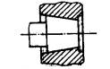
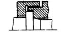
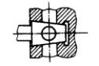
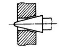
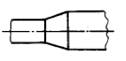

|
功能 |
设计要求 |
图例 |
应用场合 |
|
装配 |
控制相配合圆锥部位的强向或轴向位置，以保证装配的精确度和快速装拆 |
 |
刀具柄部的结合部位 主轴与刀具结合的轴颈部位等 |
|
定心 |
控制和保证径向位置的精度、轴向位置由辅助平面确定 |
 |
圆锥滚子轴承、推力滚子轴承的内、外圈，腔式滑动轴承与轴的变截面等 |
|
调整 |
根据内外锥面间隙或过盈的配合要求，保证内、外锥面之问的调整量，从而获得不同的配合 |
 |
锥形滑动轴承与轴的配合面，联轴器轮毂与轴的配合面等 |
|
密封 |
控制和保证密封用圆锥和与之配合件的尺寸精度和表面粗糙度，以达到密封要求 |
 |
液压控制阀、排气阀、堵头等 |
|
其他(连接处结构缓冲结构等) |
根据零件结构要求设计圆锥尺寸与公差 |
 |
各种阶梯轴连接处的一种过渡结构，液压缸缓冲装置等 |